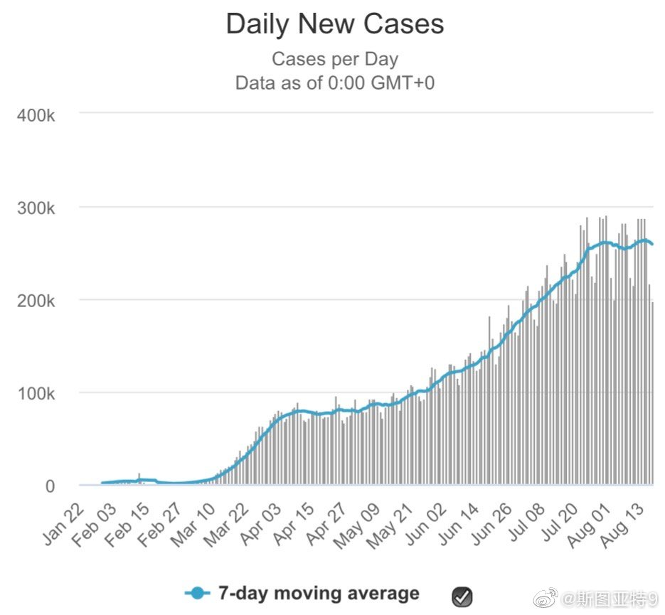

这两天心情不好，把压箱底不舍得看的电视剧Monk拿出来看了大半季。我觉得这电视机很适合在心情不好的时候放短期镇痛剂（虽然作用期很短吧）。首先它是个喜剧片，让人发笑，其次这里面的主人公都很惨，主角Monk各种恐惧症、生活不能自理、婚姻不幸，警长离婚找不到伴侣；最后他是个侦探片，里面的非主人公也都惨惨的。

斯图亚特9
2020-08-17
斯图亚特9
2020-08-17
这文章看的我很迷：欧洲球员不都按税后年薪算的？50万欧是350万人民币？以及中超预备队水平是一年350万？
@新浪体育:
#武磊降薪后的年薪水平#【武磊降薪后的年薪只有中超预备队水平】牺牲很大！武磊本次续约为降薪续约，他降薪之后的年薪相当于中超预备队的收入水平，只有这数>> 武磊降薪后的年薪可能只相当于中超预备队球员水平
武磊降薪后的年薪可能只相当于中超预备队球员水平
斯图亚特9
2020-08-17
全世界的疫情已经到拐点了？
- 
斯图亚特9
2020-08-17
这竟然是真的新闻，不是洋葱新闻。新西兰在100多天没有新病例之后出现了7个病例，然后特朗普说：“Big surge in New Zealand, you know it’s terrible” 这个时代真是真新闻比洋葱新闻还洋葱……